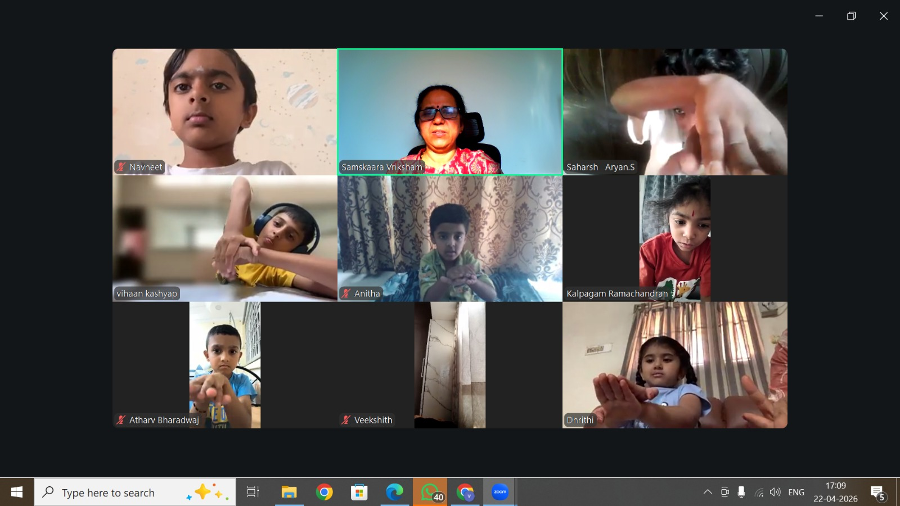
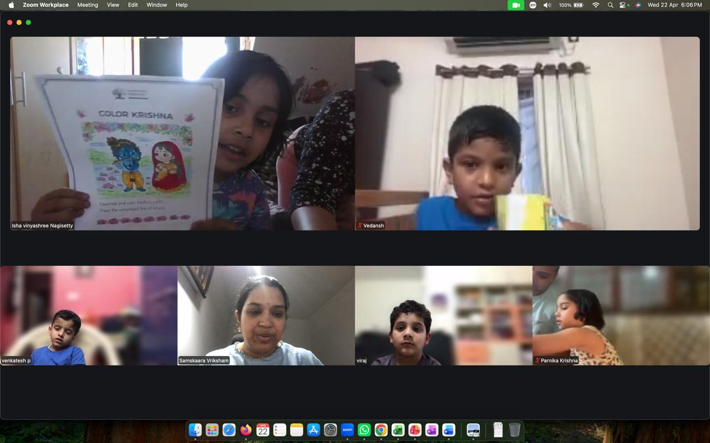
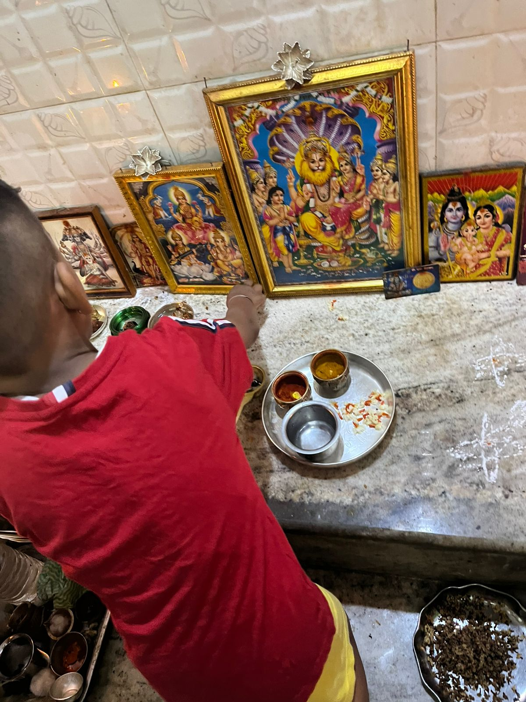

Samskaara Vriksham
Raise Rooted, Confident & Culturally Aware Children
Raise Rooted, Confident & Culturally Aware Children

It all began with motherhood.
Though I was born and brought up in a culturally rich family, both before and after marriage, I followed traditions with trust and devotion. Festivals were celebrated with joy, shlokas were chanted with love, and I believed I was passing on the same values effortlessly.

But motherhood changed everything.
My sons began asking questions that made me pause:
I didn’t have answers.

That’s when the journey truly began.
I started researching, learning, and rediscovering the depth behind our traditions. What began as a mother’s search slowly became a deeper exploration of Sanatana Dharma, our Puranas, and the science behind our practices.

Then came COVID.
With more time at home, questions grew—not just from my children, but from many parents.

At the same time, children today are growing in a fast-paced digital world:
Passing on values consciously has become a real challenge.
This is the need of the hour.

And that’s how Samskaara Vriksham was born.
A space to help children understand their roots, live meaningfully, and grow into confident, compassionate individuals.
To help children stay deeply connected to their roots while growing into confident and aware individuals.
We are nurturing:
When a child understands their roots, they don’t just grow… they flourish—grounded, confident, and purposeful.